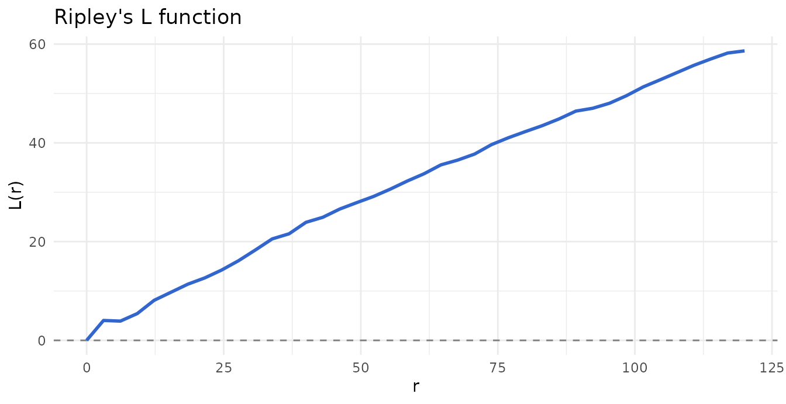
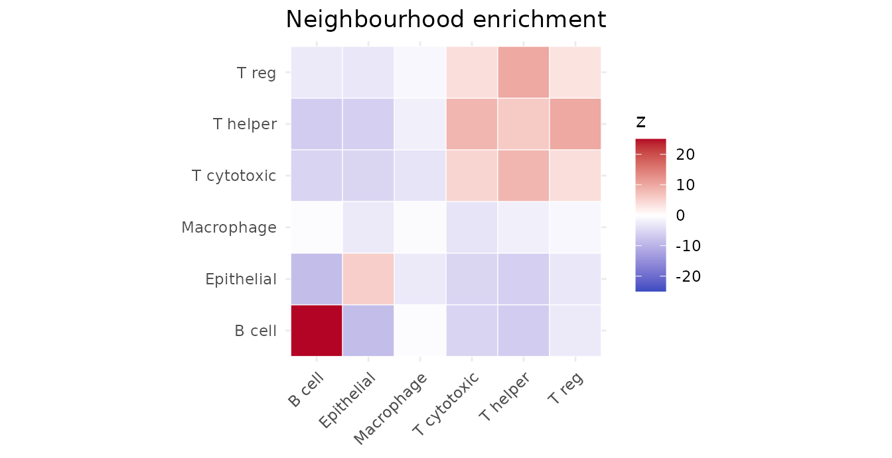
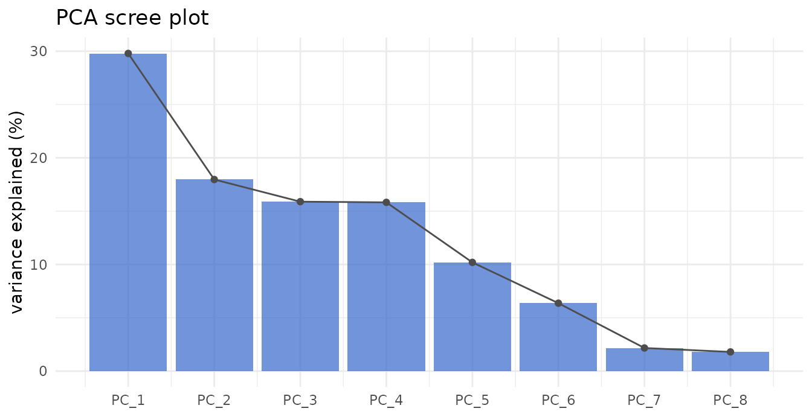
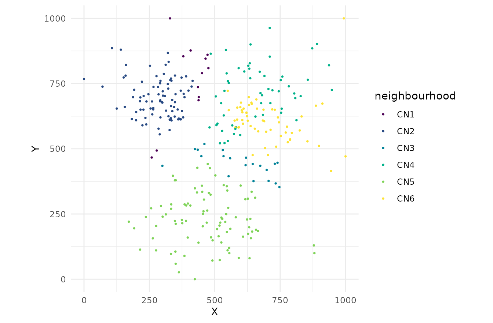
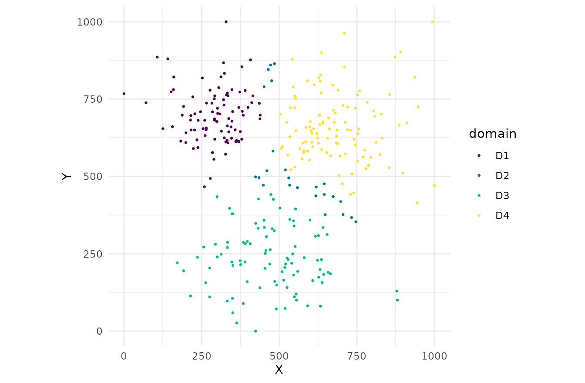

This vignette tours the capabilities added beyond the core workflow: a coherent result API, higher-order spatial structure, rigorous statistics, unsupervised phenotyping, differential testing, platform readers, and ecosystem interop.
library(phenoscapR)
library(ggplot2)
data(phenoscapR_example)
obj <- phenoscapR_example
obj@meta_data$phenotype <- obj@meta_data$phenotype_true
obj <- NormaliseData(obj, "zscore")
a <- obj[obj$sample_id == "tonsil_A", ]A coherent result API
Every spatial statistic returns a classed object with a tidy
print and a one-line autoplot(), while still
behaving like its underlying data frame.
rk <- RipleysK(a, r_seq = seq(0, 120, length.out = 40), correction = "border")
rk # tidy print
#> <phenoscapR> Ripley's K / border correction
#> 40 radii from 0 to 120
#> L(r) range: [0, 58.6] (>0 clustered, <0 dispersed)
#> r K L expected
#> 1 0.000000 0.0000 0.000000 0.00000
#> 2 3.076923 158.7302 4.031198 29.74289
#> 3 6.153846 317.4603 3.898554 118.97156
#> 4 9.230769 674.6032 5.422997 267.68600
head(rk$L) # ...but still a data frame
#> [1] 0.000000 4.031198 3.898554 5.422997 8.108830 9.746386
autoplot(rk)
autoplot(NeighbourhoodEnrichment(a, radius = 40, n_perm = 199, seed = 1))
Per-sample analysis
The single-window statistics refuse multi-sample objects by default,
but by_sample = TRUE maps them across every section and
returns a named list.
per <- RipleysK(obj, r_seq = seq(0, 100, length.out = 20), by_sample = TRUE)
per
#> <phenoscapR> per-sample results (2 samples)
#> each element: phenoscapR_ripley
#> - tonsil_A
#> - tonsil_B
#> Access a sample with result[["tonsil_A"]].
per[["tonsil_B"]]
#> <phenoscapR> Ripley's K / none correction
#> 20 radii from 0 to 100
#> L(r) range: [0, 37.4] (>0 clustered, <0 dispersed)
#> r K L expected
#> 1 0.000000 0.0000 0.000000 0.00000
#> 2 5.263158 159.1946 1.855354 87.02473
#> 3 10.526316 654.4666 3.907089 348.09891
#> 4 15.789474 1521.1926 6.215313 783.22255Rigorous statistics
Ripley’s K offers a translation edge correction; Moran’s I offers weight schemes and a permutation p-value; the interaction matrix offers a permutation null.
RipleysK(a, r_seq = seq(0, 100, length.out = 20),
correction = "translation")$K |> head()
#> [1] 0.0000 254.8305 926.1303 2018.0625 3598.2549 5532.1124
MoransI(a, feature = "CD20", radius = 40, weights = "idw", n_perm = 199,
seed = 1)
#> <phenoscapR> Moran's I spatial autocorrelation
#> I = 1.0246 (expected -0.0031 under no autocorrelation)
#> z = 16.671, p = 0.005
#> significant positive autocorrelation (clustered)
InteractionMatrix(a, radius = 40, method = "permutation", n_perm = 99,
seed = 1) |> head(4)
#> <phenoscapR> Phenotype interaction matrix
#> 1 phenotypes; score = log2(observed / expected)
#> strongest attractions:
#> from to interaction_score
#> B cell B cell 2.4380689
#> B cell Epithelial 0.0000000
#> B cell T cytotoxic 0.0000000
#> B cell Macrophage -0.1477536PCA variance
obj <- RunPCA(obj, n_pcs = 8)
round(VarianceExplained(obj), 1)
#> PC_1 PC_2 PC_3 PC_4 PC_5 PC_6 PC_7 PC_8
#> 29.8 18.0 15.9 15.8 10.2 6.4 2.2 1.8
ScreePlot(obj)
Higher-order spatial structure
Cellular neighbourhoods (niches)
Cluster cells by the phenotype composition of their local neighbourhood.
obj <- CellularNeighbourhoods(obj, n_neighbourhoods = 6, k = 20, seed = 1)
table(obj$neighbourhood)
#>
#> CN1 CN2 CN3 CN4 CN5 CN6
#> 24 164 46 102 181 123
CellMap(obj[obj$sample_id == "tonsil_A", ], colour_by = "neighbourhood")
Spatial domains
Cluster cells by spatially smoothed expression into coherent tissue regions.
obj <- SpatialDomains(obj, n_domains = 4, k = 20, seed = 1)
CellMap(obj[obj$sample_id == "tonsil_A", ], colour_by = "domain")
Unsupervised phenotyping
ExpressionClusters() clusters cells by expression
(k-means, hierarchical, or a Gaussian mixture model);
AnnotateClusters() names clusters by their top markers.
obj <- ExpressionClusters(obj, k = 6, method = "gmm")
#> Package 'mclust' version 6.1.3
#> Type 'citation("mclust")' for citing this R package in publications.
AnnotateClusters(obj, add_column = FALSE)
#> 1 2 3 4 5 6
#> "CD20Ki67+" "CD8CD3+" "PanCKKi67+" "CD68+" "CD4CD3+" "FoxP3CD4+"Differential abundance
Compare phenotype proportions across conditions, with the sample as the unit of replication.
obj@meta_data$arm <- ifelse(obj$sample_id == "tonsil_A", "ctrl", "treat")
DifferentialAbundance(obj, condition = "arm")
#> Warning: Some conditions have fewer than 2 samples; p-values are unreliable.
#> <phenoscapR> Differential abundance (wilcox test)
#> conditions: ctrl vs treat
#> 0 of 6 phenotypes differ at p_adj < 0.05
#> phenotype mean_ctrl mean_treat statistic p_value p_adj
#> B cell 0.250000 0.250000 0.5 1 1
#> Epithelial 0.281250 0.281250 0.5 1 1
#> Macrophage 0.118750 0.118750 0.5 1 1
#> T cytotoxic 0.140625 0.140625 0.5 1 1
#> T helper 0.171875 0.171875 0.5 1 1
#> T reg 0.037500 0.037500 0.5 1 1Platform readers
A general expression-plus-coordinates reader underlies per-vendor
wrappers (ReadXenium(), ReadCosMx(),
ReadMERSCOPE()).
expr <- matrix(rpois(40, 5), nrow = 10,
dimnames = list(NULL, c("CD3", "CD8", "CD20", "PanCK")))
meta <- data.frame(x = runif(10, 0, 100), y = runif(10, 0, 100),
region = rep(c("a", "b"), 5))
ReadMatrixCoords(expr, meta)
#> A SpatialCellData object
#> 10 cells across 1 sample
#> Markers: CD3, CD8, CD20, PanCK
#> Normalised: FALSE
#> Project: SpatialProjectEcosystem interop
Convert to and from Seurat and SpatialExperiment.
se <- as_Seurat(phenoscapR_example)
class(se)
#> [1] "Seurat"
#> attr(,"package")
#> [1] "SeuratObject"
back <- as_SpatialCellData(se)
back
#> A SpatialCellData object
#> 640 cells across 2 samples
#> Markers: CD3, CD4, CD8, CD20, CD68, ... (8 total)
#> Normalised: FALSE
#> Project: SpatialProjectSee also
- Getting Started – the core workflow
- Advanced Spatial Analysis – the statistics
- Visualisation Gallery – every plot